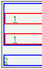
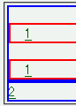

2003-11-23修正。Opera7.22での状況を追加。
マージンの設置状態に異常があるとき（Operaバグ053参照）、a要素の:hover擬似クラスにボーダーなど一部のプロパティを指定すると、マウスポインタを乗せたときにマージンの幅が変化することがある。
<style type="text/css">
a:hover {
border-bottom: 2px solid;
}
</style>
<div style="border:2px solid blue;">
<p style="border:2px solid red;"><a href="b067.html">1</a></p>
<p style="border:2px solid red;"><a href="b067.html">1</a></p>
</div>
<div style="border:2px solid blue;"><a href="b067.html">2</a></div>
例示には3つのリンクがあります。始めに「2」のリンクにマウスポインタなどを乗せてください。次に、「1」のリンク（2つありますが、どちらでもよいです）にマウスポインタなどを乗せてください。
Opera7.11（マウスポインタを乗せる前）
Opera7.11（「2」のリンクにマウスポインタを乗せた後）
※2番目のスクリーンショットの状態になった後で「1」のリンクにマウスポインタを乗せると、消えたマージンが復活します。その結果、1番目のスクリーンショットと同じ状態に戻ります。